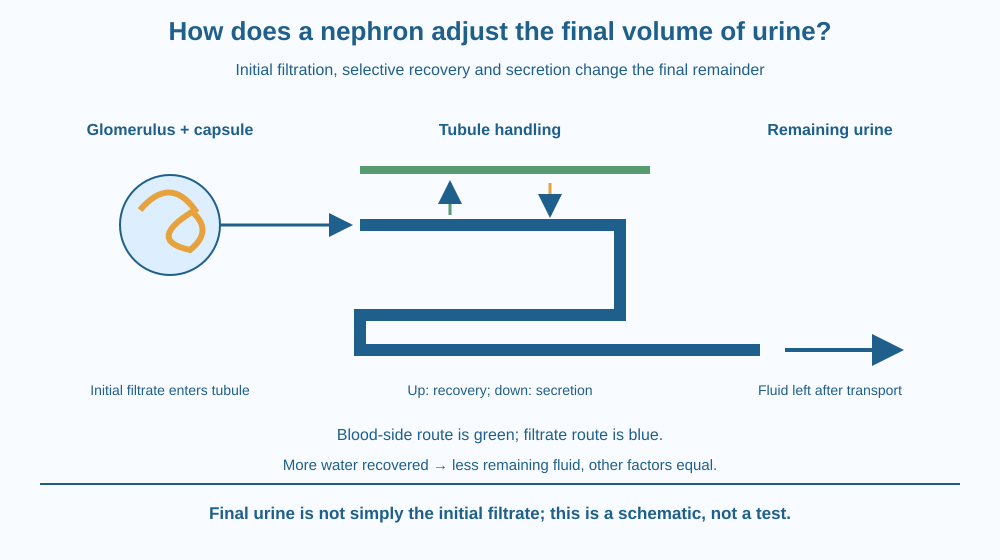

Trace fluid from a kidney's filtering unit to the final urine. Explain why filtration is only the beginning and why selective reabsorption changes both the contents and volume that remain. Use a paper model rather than collecting samples or interpreting anyone's health.
A school diagram sometimes draws an arrow from blood straight to a bag labelled urine. That arrow hides a major part of kidney work. The first filtered fluid contains water and useful small substances as well as substances that need removal.
If everything filtered were simply discarded, useful materials would be lost. Instead, much of the filtered material returns to the body, and the remaining fluid changes along its route.
The mystery is not just how a filter separates things. It is how filtering and selective recovery work together to produce an appropriate final output.
A nephron is a microscopic functional unit of the kidney. It includes a filtering region and a tubule. Many such units work together; we need no fixed count to explain the mechanism.
The glomerulus is a cluster of small blood vessels enclosed by Bowman's capsule. Blood pressure supports movement of water and small dissolved substances through the filtration barrier into the capsule. Most blood cells and large proteins normally remain on the blood side.
The resulting filtrate is not the same as final urine. Small substances such as glucose and dissolved ions can enter the filtrate along with water and urea. Filtration is not a perfectly informed gate that admits only unwanted molecules.
As filtrate moves along the tubule, useful materials are recovered. Reabsorption means movement from the tubule fluid back toward the blood. Under normal conditions, much needed glucose and many other useful solutes are reclaimed, with substantial water recovery too.
Different tubule regions have different transport properties. Solute transport and the surrounding concentration conditions help water recovery. The detailed pathways are complex, but the essential distinction is clear: the composition changes along the tubule rather than remaining a copy of the initial filtrate.
Secretion adds another route. Some substances move from the blood side into the tubular fluid. Thus the final excreted amount of a substance depends on filtration, reabsorption and secretion, rather than filtration alone.
Later tubule regions and collecting ducts help adjust final water recovery. When these pathways allow more water to return to the body, a smaller volume can remain for excretion. The adjustment responds to physiological conditions; this lesson does not repeat the general hormone-control pathway.
The fluid that remains passes toward the renal pelvis and ureter as urine. The kidney does not send blood cells through the ureter as its normal filtering route. Keeping the blood pathway separate from the tubular-fluid pathway prevents a misleading plumbing picture.
The liver makes much of the body's urea from nitrogen processing, while the kidney handles its removal. This lesson therefore asks what happens to fluid already reaching the nephron, rather than repeating how urea is made. Making a waste molecule and controlling its excretion are different jobs.
Draw two neighbouring routes: blood and tubular fluid. At the filtering region, transfer some water and small-substance symbols into the tubule route. Leave blood-cell and large-protein symbols in the blood route.
Add return arrows labelled reabsorption at several positions. Place an opposite arrow labelled secretion where a model substance is added to the tubular fluid. The arrows must have distinct directions.
Finally, circle what remains at the exit. That remainder represents urine in the model. It is not all the material that originally entered the capsule. The paper symbols illustrate roles and directions, not real filtration percentages or measurements of a person.
The SVG places a glomerulus and capsule above a simplified tubule. One arrow carries initial filtrate forward. Separate arrows return useful materials and water toward a blood-side route.
A secretion arrow points into the tubule, and the final exit is labelled remaining urine. A second comparison shows greater or smaller water recovery producing different remaining fluid volumes in an otherwise simplified scenario.
The drawing is schematic, not a complete anatomical map or a clinical test. Colours identify pathways rather than oxygen levels, laboratory values or particular medical conditions.

School discussions in India often use the words excretion and filtration together. A nephron explanation becomes more accurate when students add selective recovery rather than describing the kidney as an ordinary kitchen sieve.
A sieve separates by physical openings but does not normally reclaim particular dissolved nutrients along a living transport tube. The kidney's barrier and tubule have different roles, supported by living cells and regulated transport.
Changes in an individual's urine have many possible causes. This classroom mechanism cannot diagnose dehydration or kidney disease, set a drinking target, or interpret a test result. No personal observation is needed to learn the biological sequence.
Use paper, a pencil and four colours. Keep everything imaginary; do not collect body fluids.
Use invented symbol counts and label them model units. Explain why changing the return arrows changes the output even when the initial filtration symbols stay the same. Ask a partner to check the direction of each arrow rather than guessing a health condition.
Why would a filter that removes water and small molecules still need a selective recovery system? Include the problem of useful glucose entering the initial filtrate.
Now imagine two otherwise identical paper models with different amounts of water returned before the exit. Which leaves a smaller final volume? Keep this a conditional comparison. Actual kidney function involves interacting controls, so one arrow change is not a complete account of a person's physiology.
Which structure performs the initial nephron filtration?
Answer: B — Glomerular filtration produces the initial fluid in Bowman's capsule.
Why is the first filtrate different from final urine?
Answer: C — Reabsorption and secretion change the fluid after filtration.
In a simplified model, more water returns to blood before the exit. What remains?
Answer: A — Returning more water leaves less fluid for excretion in the stated comparison.
Create a corrected version of the misleading blood-to-urine arrow. Include a glomerular barrier, initial filtrate, reabsorption, secretion and final urine.
Write one sentence for each boundary crossing. Your explanation should identify what normally stays in the blood, what may enter the filtrate and what can return later. Do not add a medical threshold or claim that the first filtered fluid contains only waste.
Excretion can begin by moving useful substances into a fluid that will partly be discarded. The system achieves selectivity through several stages rather than one all-knowing filter. Recovery is therefore a central part of waste removal, not an accidental correction after the main job is finished.
The nephron filters first, then changes the fluid through selective reabsorption and secretion; water recovery helps determine how much urine remains.